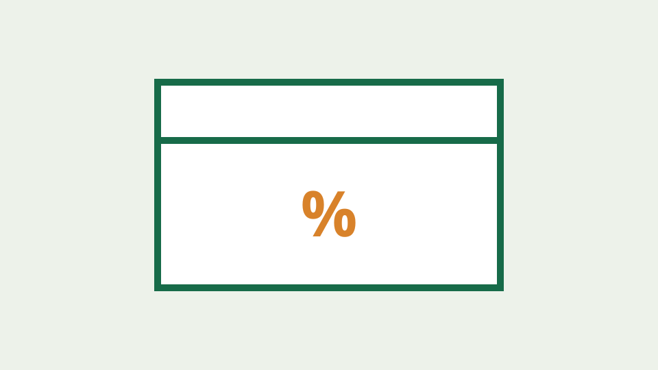

机场选购与使用问题解答：一元机场、免费节点、小火箭配置与防坑 30 问全解析
全面解答一元机场、免费机场、赔钱机场、小火箭 (Shadowrocket) 订阅配置、晚高峰卡顿、优惠码与账号安全等 30 篇高频疑难。
整理公开信息、套餐价格、优惠信息、产品体验与风险观察。我们区分事实、用户反馈和编辑判断，帮助你更从容地比较网络服务。
用透明标准梳理选择方法与公开信息，帮助不同需求的读者建立候选清单。
02围绕价格、条款、售后和使用场景，提供可复核的横向比较框架。
03按推荐顺序整理 16 项服务，从线路、稳定性、高峰期、节假日、套餐和售后维度建立选择依据。
04收录 35 篇小火箭、Clash、Platy、机场与 VPN 基础、故障排查和风险合规指南。
05汇总机场推荐榜优惠码、折后价格与适用套餐，并提供复制、核验和购买风险提示。
06解答机场选择、订阅配置、优惠使用、节点故障与账户安全等常见疑问与问答指南。
07整理机场失联、停服与“跑路机场”相关的历史公开记录，帮助读者区分临时故障和持续异常，并提供购买前预防、证据保存、账户安全与损失控制方法。
全面解答一元机场、免费机场、赔钱机场、小火箭 (Shadowrocket) 订阅配置、晚高峰卡顿、优惠码与账号安全等 30 篇高频疑难。

解释服务失联和“跑路机场”搜索词背后的常见风险信号，提供基于公开事实的记录、核验与损失控制方法。

结合福利中心已整理的机场优惠码，说明如何核对适用套餐、折后总价、续费价格、退款限制和活动真实性。

用中性语言解释套餐周期、延迟、吞吐、丢包、服务等级与工单等常见术语，帮助新手读懂产品页面。
说明测评文章应如何记录环境、时间、样本与限制，避免把单次速度或个人感受写成服务长期表现。

按照机场推荐榜顺序，对比 16 项候选服务的公开价格、套餐结构、优惠信息与证据状态，并说明节点稳定性、晚高峰和节假日表现应如何持续测试。
全面解答一元机场、免费机场、赔钱机场、小火箭 (Shadowrocket) 订阅配置、晚高峰卡顿、优惠码与账号安全等 30 篇高频疑难。
解释服务失联和“跑路机场”搜索词背后的常见风险信号，提供基于公开事实的记录、核验与损失控制方法。
用中性语言解释套餐周期、延迟、吞吐、丢包、服务等级与工单等常见术语，帮助新手读懂产品页面。
按照机场推荐榜顺序，对比 16 项候选服务的公开价格、套餐结构、优惠信息与证据状态，并说明节点稳定性、晚高峰和节假日表现应如何持续测试。
一份不依赖具体品牌的新手选择框架，从需求、预算、服务条款、支持渠道和退出成本五个方面缩小候选范围。
用中性语言解释套餐周期、延迟、吞吐、丢包、服务等级与工单等常见术语，帮助新手读懂产品页面。
解释服务失联和“跑路机场”搜索词背后的常见风险信号，提供基于公开事实的记录、核验与损失控制方法。
结合福利中心已整理的机场优惠码，说明如何核对适用套餐、折后总价、续费价格、退款限制和活动真实性。
全面解答一元机场、免费机场、赔钱机场、小火箭 (Shadowrocket) 订阅配置、晚高峰卡顿、优惠码与账号安全等 30 篇高频疑难。